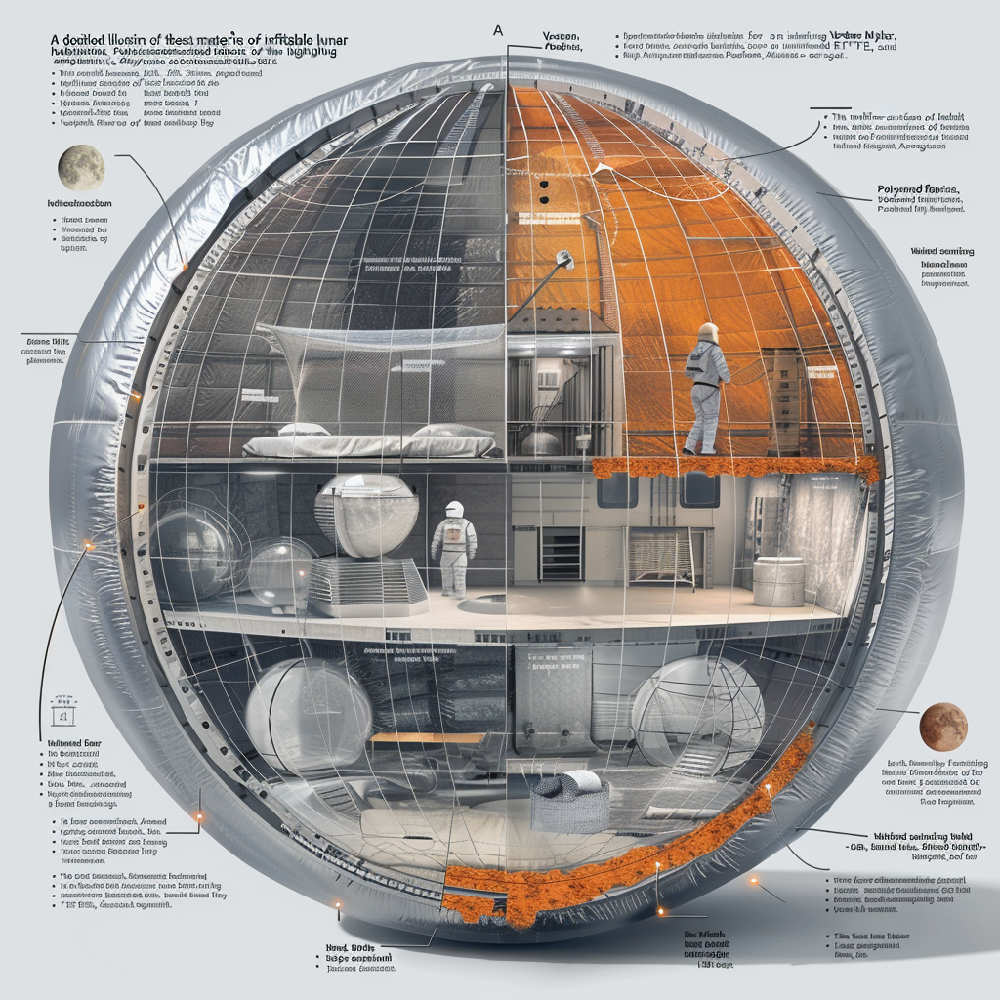

Layout Overview

Central Hub
- Size: Medium to large, depending on the complexity of operations and administrative needs.
- Purpose: Centralized command center, administrative offices, control room.
- Function: Coordination of habitat activities, communication hub, logistics management.
Living Quarters
- Size: Several small to medium-sized modules.
- Purpose: Private cabins, shared facilities, recreational areas.
- Function: Provide comfortable living spaces, privacy, and social interaction areas for crew members.
Laboratories
- Size: Medium-sized specialized modules.
- Purpose: Dedicated labs for biology, chemistry, physics, materials science, etc.
- Function: Conduct scientific research with modular workstations and advanced instruments.
Medical Facilities
- Size: Medium-sized module.
- Purpose: Clinic, emergency room, quarantine rooms.
- Function: Provide comprehensive medical care, emergency response, and isolation capabilities.
Recreational Areas
- Size: Medium-sized module.
- Purpose: Gym, sports facilities, central park with hydroponics.
- Function: Support physical activity, relaxation, and mental well-being of crew members.
Storage and Utility Areas
- Size: Several small to medium-sized modules.
- Purpose: Water tanks, waste management, technical workshops.
- Function: Maintain habitat infrastructure, manage water supply, process waste, and conduct equipment maintenance.
Surface Access
- Size: Small to medium-sized module(s) integrated with docking facilities.
- Purpose: Charging ports, docking for lunar rovers.
- Function: Facilitate efficient transfer of supplies, personnel, and equipment between the habitat and lunar surface.
Size Legend
- Small Module: Approx. 6m x 6m (36 sqm)
- Medium Module: Approx. 8m x 8m (64 sqm)
- Large Module: Approx. 10m x 10m (100 sqm)